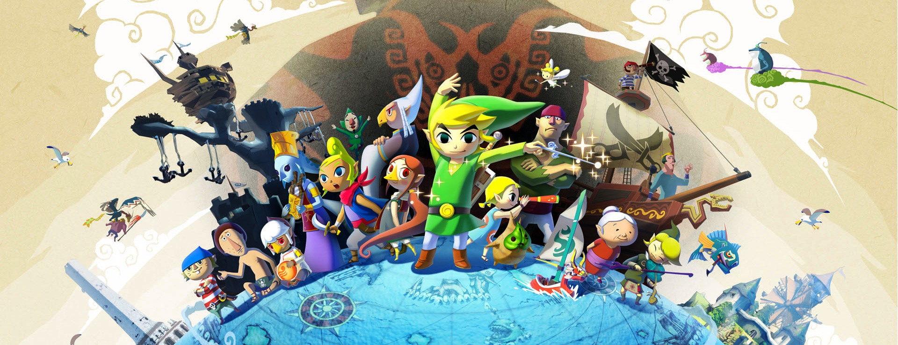
The facial expressions in Wind Waker are a pivotal part to the game’s charm. Through the use of a handful of tiny textures, they suited the style perfectly, while giving the characters a breadth of emotive ability.
Here are a couple examples to start with.
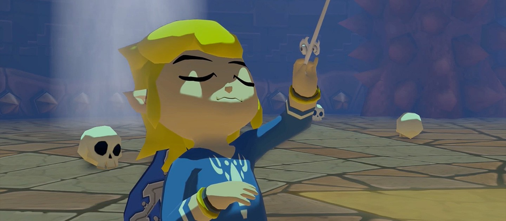Concentration
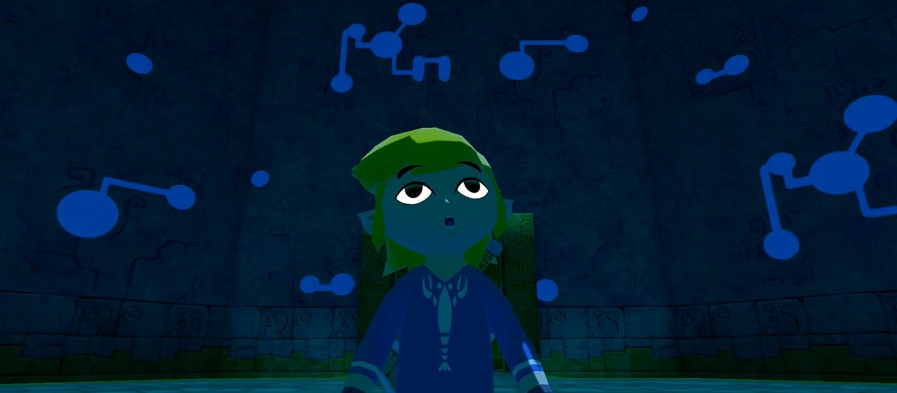Awe
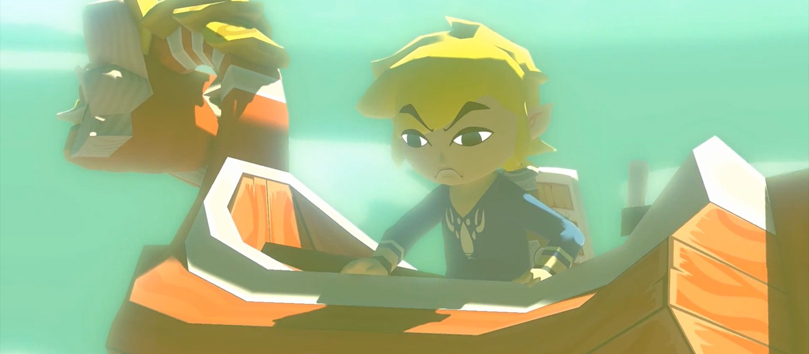Determination
And it’s hard to leave out this memorable gag — with the humour coming purely from a few, well-timed facial expressions.
Here is Link rendered using Threejs.
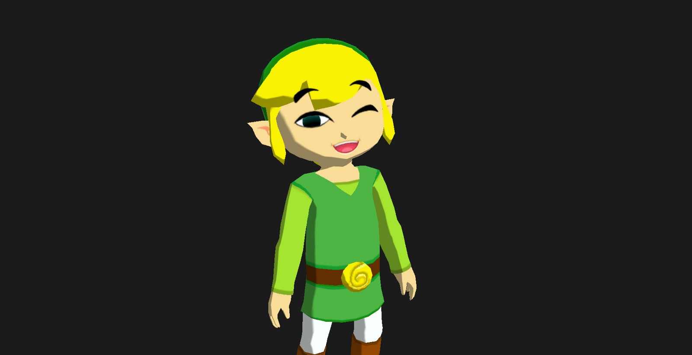
And here is an interactive Codepen. Have a play with the different facial features. It’s quite fun to see all of the combinations possible, no wonder they added a ‘selfie’ mode to the HD version!
The model was sourced from Mystie — many thanks!
It was really amazing to dig into the model and check out the poly count and UV layout.
Below is the model in Maya, it’s made up of just 1674 vertices, 2802 triangles.
You can see in the wireframe that it’s really quite low-poly, however the sharp edges actually work perfectly with this style.
Before I get to the facial expressions, I wanted to share some of the texture work used on the model — primarily this tiny texture.
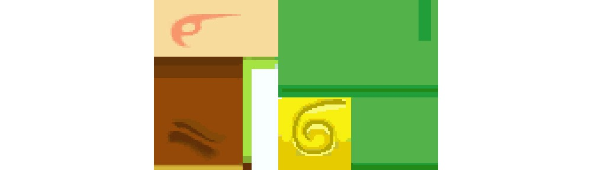
Here you can see the body’s UVs laid out relating to this texture. Here is everything except the facial features.
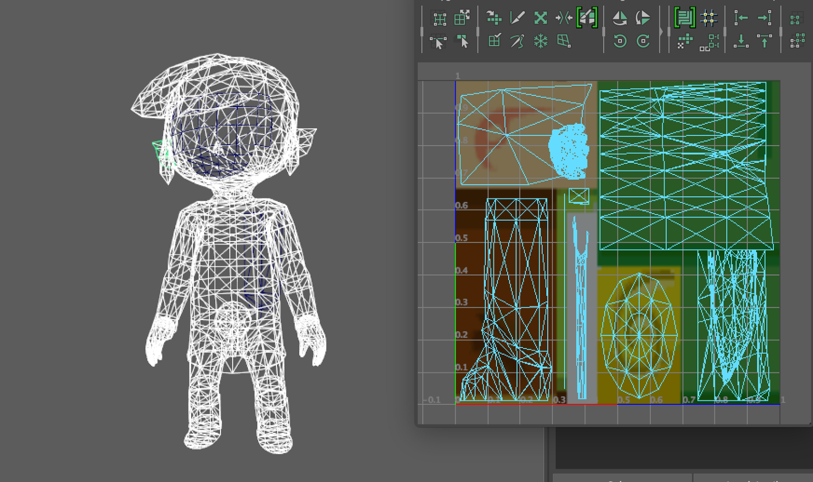
An interesting note is that some features which are just a solid colour are not laid out at all. Instead, the whole mesh populates just a single UV coordinate. For example, the entire hair mesh gets its colour from a single point in the yellow portion of the map — used for the belt.
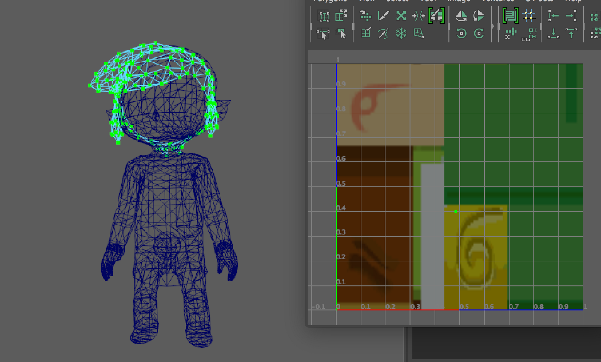
The facial features populate separate meshes to the body, and have their own textures. Below is an example of each type.
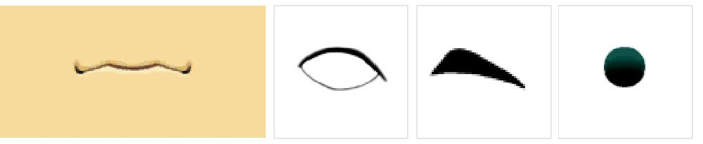
Link’s facial set features textures for 7 eye shapes, 6 eyebrows, 9 mouths, and 1 pupil. You can play around with these options in the Codepen above.
Here we can see Link’s mouth’s UVs laid out over the corresponding image.
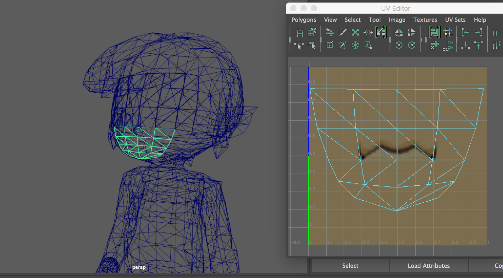
The eyes, brows and pupils consist of separate meshes that are raised slightly above the face.
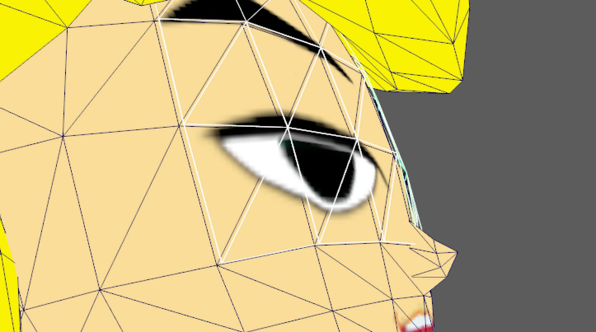
If we zoom in extra close, we can also see that even the pupil and eye meshes are separated slightly, done to avoid z-fighting.
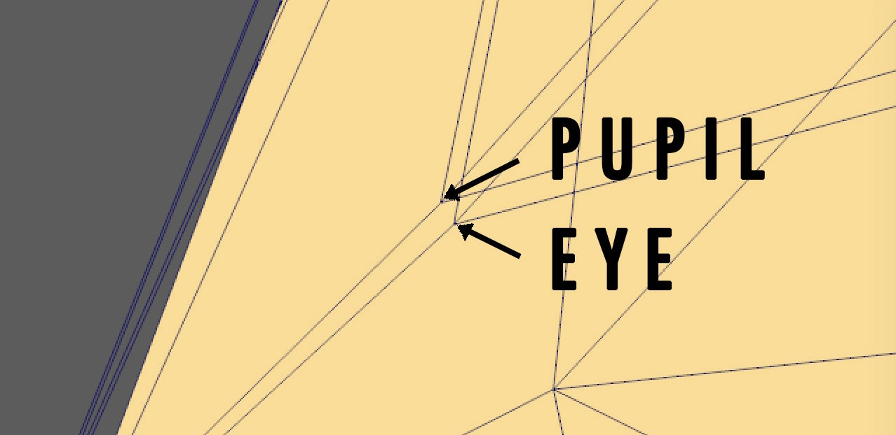
The order isn’t obvious, as one would presume that the pupil lays behind the eye, as to mask it.
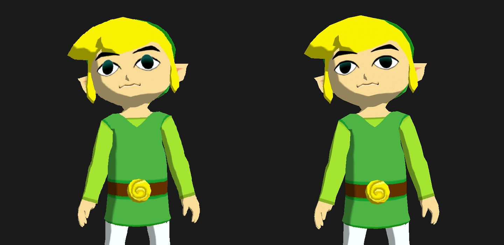
However this is instead achieved through masking inside the shader itself. The eye texture is used as a mask, making the pupil only visible in the white areas of the eye image.
Below we can see an example of Link’s pupils dilating. This meant that not only could they shift Link’s pupils around to have him look in different directions, they were also able to scale the pupil texture.
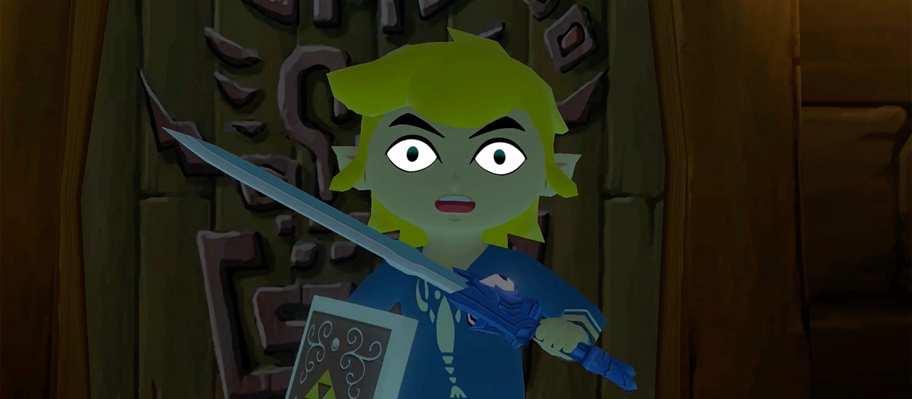
This is achieved simply by scaling and shifting the UV coordinates themselves, and not the actual mesh. In my case, I passed the values into the fragment shader as a uniform, and updated the UVs accordingly.
Even though it wasn’t related to Link’s expressions per se, I also had to simulate some simple lighting on the model to make the object more readable — notably the nose.
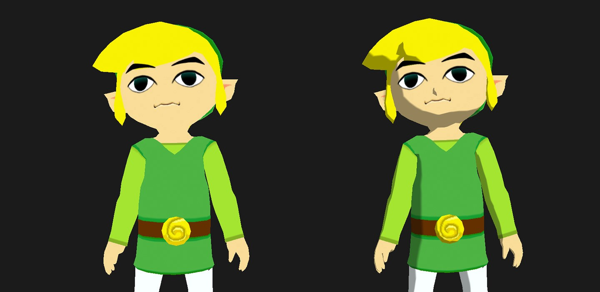
This flat-shaded style really shines once some basic lighting is applied. All I have done here is a dot product of the mesh’s normal (facing direction) against a light direction. This gives you a value of -1 to 1, of which I clamped to a range of 0.6 to 1, and multiplied against the final colour.
All of the code can be found in this Codepen, which is the same as posted earlier in the article.
Short and sweet! There wasn’t too much to this effect, but it’s important none-the-less and very characteristic of the game’s unique style.
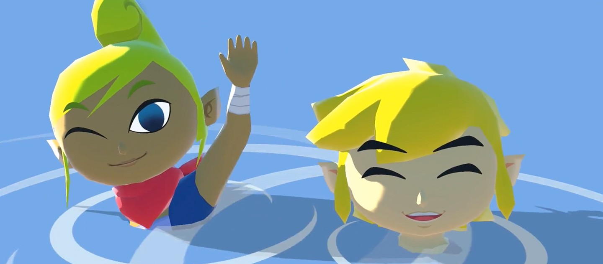